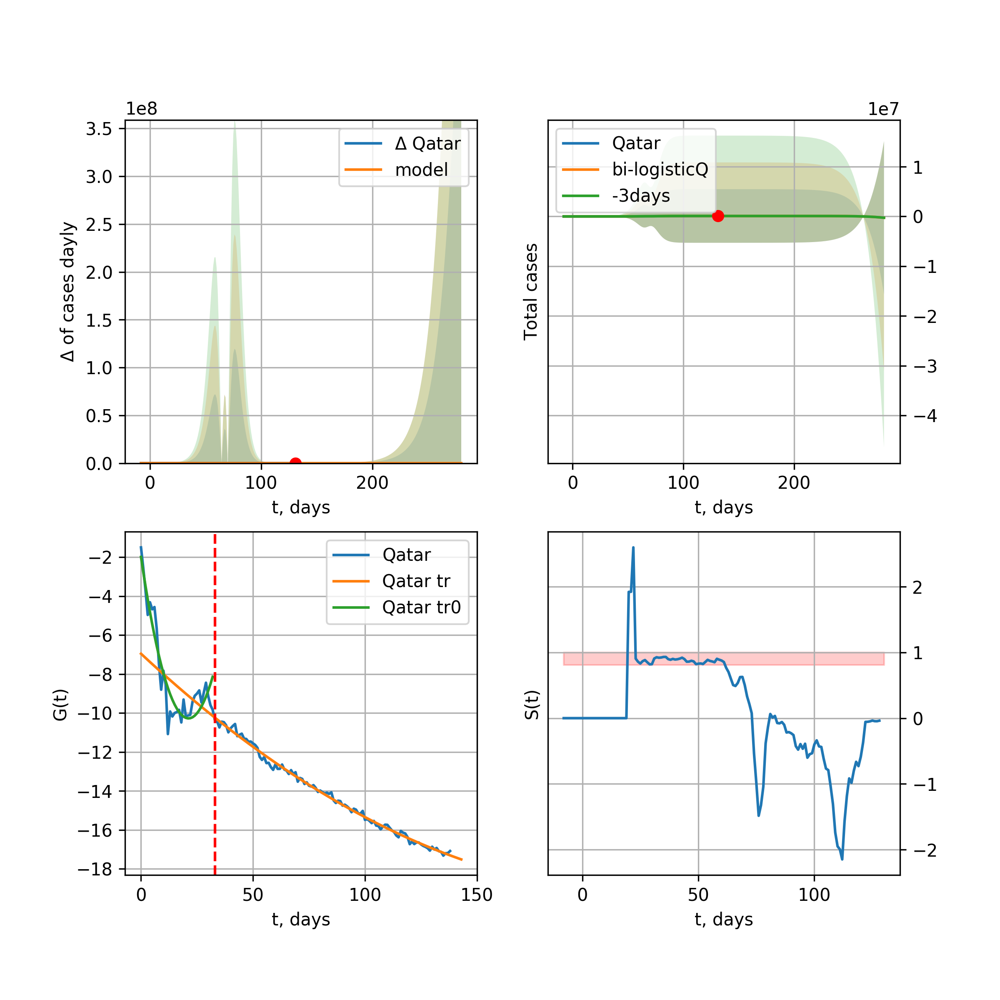
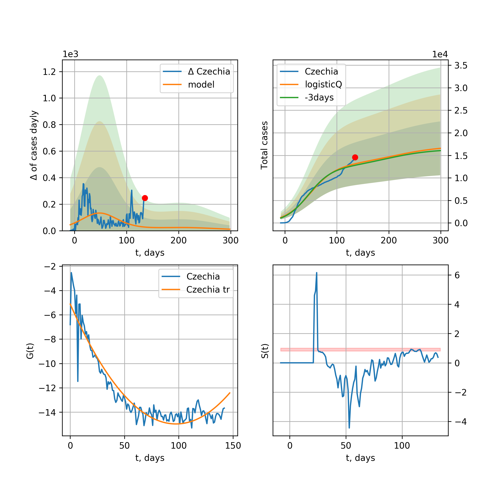

Multi-logistic model of COVID-19 dynamics
Model, code, results
Project maintained by algmaknick Hosted on GitHub Pages — Theme by mattgraham
World

World data at: 2020-05-15
+3 day model MAPE: 0.037623
model: tri-logisticQ
coeffs: [ 4.63260315e+06 1.02278588e-06 7.72610689e+01 -8.66984724e+04]
S.Korea scenario coeffs: [0.35416971, 0.02606324, 4.35859408, 19.30413219]
rational stdev: 0.204755
forecast at the end of period: +302 days
deltaDaycases: 3372
total cases: 6389218 ± 1308222
total death: 426038 ± 261699
tri-logisticQ approximation splitting points: 26,54
trend coefficient of determination: 0.957216
intercept_: -9.890425229004336
coeffs_: [ 0. -0.26614025 0.00124975]
trend1 coefficient of determination: 0.900515
intercept_: -20.622215746086294
coeffs_: [ 0. 0.23801537 -0.00236922]
trend coefficient of determination: 0.993171
intercept_: -3.004573081794698
coeffs_: [ 0. -0.28773141 0.00127866]
European Union

European Union data at: 2020-05-15
+3 day model MAPE: 0.012361
model: logisticQ
coeffs: [ 1.09284001e+06 6.77848514e-07 4.97881511e+01 -1.69090361e+05]
S.Korea scenario coeffs: [0.35416971, 0.02606324, 4.35859408, 19.30413219]
rational stdev: 0.428561
forecast at the end of period: +267 days
deltaDaycases: 7
total cases: 1479763 ± 634168
total death: 157394 ± 202358
trend coefficient of determination: 0.988651
intercept_: -3.0188540234193297
coeffs_: [ 0. -0.32793299 0.00168393]
USA

USA data at: 2020-05-15
+3 day model MAPE: 0.010375
model: Richards
coeffs: [ 1.85666353e+06 5.30051337e+00 -5.57399278e+01 9.35394505e-03]
S.Korea scenario coeffs: [0.36242246, 2.56241634, 1.84890887, 0.13324732]
rational stdev: 0.296898
forecast at the end of period: +344 days
deltaDaycases: 1338
total cases: 2445561 ± 726081
total death: 145827 ± 129887
trend coefficient of determination: 0.945081
intercept: -0.978395
slope: -0.046483
Spain

Spain data at: 2020-05-15
+3 day model MAPE: 0.009395
model: Richards
coeffs: [ 2.84821979e+05 8.17760448e+00 -4.65538127e+01 7.91190407e-03]
S.Korea scenario coeffs: [0.36242246, 2.56241634, 1.84890887, 0.13324732]
rational stdev: 0.193768
forecast at the end of period: +302 days
deltaDaycases: 83
total cases: 384259 ± 74457
total death: 38457 ± 22355
trend coefficient of determination: 0.946556
intercept: -0.786594
slope: -0.058550
Italy

Italy data at: 2020-05-15
+3 day model MAPE: 0.002090
model: Richards
coeffs: [ 2.34518677e+05 5.49490987e+00 -4.83575213e+01 1.10510055e-02]
S.Korea scenario coeffs: [0.36242246, 2.56241634, 1.84890887, 0.13324732]
rational stdev: 0.072531
forecast at the end of period: +274 days
deltaDaycases: 128
total cases: 313118 ± 22710
total death: 44208 ± 9619
trend coefficient of determination: 0.982239
intercept: -1.093577
slope: -0.057210
United Kingdom

United Kingdom data at: 2020-05-15
+3 day model MAPE: 0.007736
model: Richards
coeffs: [ 3.06761233e+05 4.31463954e+00 -5.94511832e+01 1.13262920e-02]
S.Korea scenario coeffs: [0.36242246, 2.56241634, 1.84890887, 0.13324732]
rational stdev: 0.103685
forecast at the end of period: +372 days
deltaDaycases: 137
total cases: 409420 ± 42450
total death: 58803 ± 18290
trend coefficient of determination: 0.941296
intercept: -1.385191
slope: -0.045290
France

France data at: 2020-05-15
+3 day model MAPE: 0.005449
model: Richards
coeffs: [1.78247843e+05 2.77672865e-01 2.20525121e+01 3.87751717e-01]
S.Korea scenario coeffs: [0.36242246, 2.56241634, 1.84890887, 0.13324732]
rational stdev: 0.176526
forecast at the end of period: +134 days
deltaDaycases: 102
total cases: 240037 ± 42372
total death: 36812 ± 19494
trend coefficient of determination: 0.949527
intercept: -3.054872
slope: -0.102813
Germany

Germany data at: 2020-05-15
+3 day model MAPE: 0.004697
model: Richards
coeffs: [ 1.75780172e+05 7.11125802e+00 -3.58852043e+01 1.18671768e-02]
S.Korea scenario coeffs: [0.36242246, 2.56241634, 1.84890887, 0.13324732]
rational stdev: 0.805545
forecast at the end of period: +204 days
deltaDaycases: 76
total cases: 236829 ± 190776
total death: 10784 ± 26060
trend coefficient of determination: 0.952748
intercept: -1.154133
slope: -0.069313
Turkey

Turkey data at: 2020-05-15
+3 day model MAPE: 0.009609
model: Richards
coeffs: [ 1.56370869e+05 4.38525214e+00 -2.74703291e+01 1.74693910e-02]
S.Korea scenario coeffs: [0.36242246, 2.56241634, 1.84890887, 0.13324732]
rational stdev: 0.203359
forecast at the end of period: +196 days
deltaDaycases: 191
total cases: 205239 ± 41737
total death: 5682 ± 3466
trend coefficient of determination: 0.717846
intercept: -1.003845
slope: -0.059221
Russia

Russia data at: 2020-05-15
+3 day model MAPE: 0.015040
model: Richards
coeffs: [ 8.90167887e+05 8.65692439e-01 -2.93596708e+01 4.35475233e-02]
S.Korea scenario coeffs: [0.36242246, 2.56241634, 1.84890887, 0.13324732]
rational stdev: 0.078710
forecast at the end of period: +652 days
deltaDaycases: 43
total cases: 1209425 ± 95193
total death: 11125 ± 2626
trend coefficient of determination: 0.917462
intercept: -1.789933
slope: -0.033264
Iran

Iran data at: 2020-05-15
+3 day model MAPE: 0.025604
model: Richards
coeffs: [ 1.22833702e+05 3.03401975e+00 -4.85767838e+01 1.64526921e-02]
S.Korea scenario coeffs: [0.36242246, 2.56241634, 1.84890887, 0.13324732]
rational stdev: 0.281228
forecast at the end of period: +316 days
deltaDaycases: 81
total cases: 162331 ± 45652
total death: 9606 ± 8104
trend coefficient of determination: 0.903850
intercept: -1.155212
slope: -0.047638
Brazil

Brazil data at: 2020-05-15
+3 day model MAPE: 0.034103
model: logisticQ
coeffs: [ 5.36453632e+05 8.17068151e-06 7.08176227e+01 -1.03023528e+04]
S.Korea scenario coeffs: [0.35416971, 0.02606324, 4.35859408, 19.30413219]
rational stdev: 0.404134
forecast at the end of period: +337 days
deltaDaycases: 144
total cases: 723043 ± 292206
total death: 49108 ± 59538
trend coefficient of determination: 0.870684
intercept_: -4.070222895949671
coeffs_: [ 0. -0.29355475 0.00202485]
Canada

Canada data at: 2020-05-15
+3 day model MAPE: 0.001543
model: Richards
coeffs: [ 1.06268062e+05 3.00845295e+00 -6.60491832e+01 1.45896977e-02]
S.Korea scenario coeffs: [0.36242246, 2.56241634, 1.84890887, 0.13324732]
rational stdev: 0.179853
forecast at the end of period: +420 days
deltaDaycases: 36
total cases: 142256 ± 25585
total death: 10604 ± 5721
trend coefficient of determination: 0.948504
intercept: -1.522363
slope: -0.047341
Belgium

Belgium data at: 2020-05-15
+3 day model MAPE: 0.000765
model: Richards
coeffs: [ 5.79414958e+04 7.74385455e-01 -8.19565255e+00 9.46907506e-02]
S.Korea scenario coeffs: [0.36242246, 2.56241634, 1.84890887, 0.13324732]
rational stdev: 0.346276
forecast at the end of period: +204 days
deltaDaycases: 34
total cases: 77531 ± 26847
total death: 12711 ± 13204
trend coefficient of determination: 0.944663
intercept: -1.738013
slope: -0.066101
Peru

Peru data at: 2020-05-15
+3 day model MAPE: 0.032637
model: logisticQ
coeffs: [ 1.20759496e+05 4.83784667e-06 5.37383844e+01 -2.18583304e+04]
S.Korea scenario coeffs: [0.35416971, 0.02606324, 4.35859408, 19.30413219]
rational stdev: 0.363833
forecast at the end of period: +246 days
deltaDaycases: 46
total cases: 162659 ± 59180
total death: 4604 ± 5025
trend coefficient of determination: 0.971612
intercept_: -3.6924961087751402
coeffs_: [ 0. -0.28184808 0.00186541]
Netherlands

Netherlands data at: 2020-05-15
+3 day model MAPE: 0.001177
model: Richards
coeffs: [4.61505935e+04 4.54590691e-01 3.64993452e+00 1.61963360e-01]
S.Korea scenario coeffs: [0.36242246, 2.56241634, 1.84890887, 0.13324732]
rational stdev: 0.167389
forecast at the end of period: +204 days
deltaDaycases: 23
total cases: 61920 ± 10364
total death: 7999 ± 4016
trend coefficient of determination: 0.976017
intercept: -1.682568
slope: -0.075140
India

India data at: 2020-05-15
+3 day model MAPE: 0.000457
model: Richards
coeffs: [ 1.04331341e+06 7.69981137e-01 -6.25010289e+01 2.66474021e-02]
S.Korea scenario coeffs: [0.36242246, 2.56241634, 1.84890887, 0.13324732]
rational stdev: 0.329577
forecast at the end of period: +932 days
deltaDaycases: 269
total cases: 1380815 ± 455084
total death: 44233 ± 43734
trend coefficient of determination: 0.457723
intercept: -1.714907
slope: -0.021714
Switzerland

Switzerland data at: 2020-05-15
+3 day model MAPE: 0.004101
model: logisticQ
coeffs: [ 2.97172372e+04 7.84355723e-07 2.57233117e+01 -1.88529227e+05]
S.Korea scenario coeffs: [0.35416971, 0.02606324, 4.35859408, 19.30413219]
rational stdev: 0.349817
forecast at the end of period: +92 days
deltaDaycases: 16
total cases: 40025 ± 14001
total death: 2463 ± 2584
trend coefficient of determination: 0.985688
intercept_: -3.6709395868506007
coeffs_: [ 0. -0.33069433 0.00212686]
Ecuador

Ecuador data at: 2020-05-15
+3 day model MAPE: 0.007083
model: logisticQ
coeffs: [ 4.06857867e+04 8.81370481e-07 4.22433998e+01 -8.58567294e+04]
S.Korea scenario coeffs: [0.35416971, 0.02606324, 4.35859408, 19.30413219]
rational stdev: 0.360601
forecast at the end of period: +232 days
deltaDaycases: 9
total cases: 54844 ± 19776
total death: 4521 ± 4890
trend coefficient of determination: 0.704747
intercept_: -5.581505442297946
coeffs_: [ 0. -0.2966527 0.00241697]
Portugal

Portugal data at: 2020-05-15
+3 day model MAPE: 0.007812
model: Richards
coeffs: [ 2.97713906e+04 7.65109948e+00 -4.09679141e+01 9.12052423e-03]
S.Korea scenario coeffs: [0.36242246, 2.56241634, 1.84890887, 0.13324732]
rational stdev: 0.304479
forecast at the end of period: +232 days
deltaDaycases: 25
total cases: 39421 ± 12002
total death: 1641 ± 1498
trend coefficient of determination: 0.896402
intercept: -0.770908
slope: -0.062334
Saudi Arabia

Saudi Arabia data at: 2020-05-15
+3 day model MAPE: 0.041272
model: logisticQ
coeffs: [ 7.02788234e+04 4.75894873e-06 5.74818156e+01 -2.12596896e+04]
S.Korea scenario coeffs: [0.35416971, 0.02606324, 4.35859408, 19.30413219]
rational stdev: 0.332348
forecast at the end of period: +274 days
deltaDaycases: 14
total cases: 94897 ± 31539
total death: 563 ± 561
trend coefficient of determination: 0.840306
intercept_: -4.37938513451344
coeffs_: [ 0. -0.22542715 0.00134642]
Sweden

Sweden data at: 2020-05-15
+3 day model MAPE: 0.009213
model: Richards
coeffs: [ 4.46052326e+04 1.59568365e+00 -5.26644512e+01 2.30603094e-02]
S.Korea scenario coeffs: [0.36242246, 2.56241634, 1.84890887, 0.13324732]
rational stdev: 0.270867
forecast at the end of period: +442 days
deltaDaycases: 26
total cases: 58517 ± 15850
total death: 7304 ± 5935
trend coefficient of determination: 0.816115
intercept: -1.389876
slope: -0.038467
Pakistan

Pakistan data at: 2020-05-15
+3 day model MAPE: 0.010298
model: Richards
coeffs: [ 4.73826893e+05 4.89052373e-01 -5.79454179e+01 3.68149466e-02]
S.Korea scenario coeffs: [0.36242246, 2.56241634, 1.84890887, 0.13324732]
rational stdev: 0.413337
forecast at the end of period: +1212 days
deltaDaycases: 43
total cases: 638424 ± 263884
total death: 13723 ± 17016
trend coefficient of determination: 0.166507
intercept: -2.193701
slope: -0.016865
Ireland

Ireland data at: 2020-05-15
+3 day model MAPE: 0.008547
model: logisticQ
coeffs: [ 2.37996817e+04 3.46308882e-06 3.49588219e+01 -3.75056493e+04]
S.Korea scenario coeffs: [0.35416971, 0.02606324, 4.35859408, 19.30413219]
rational stdev: 0.325875
forecast at the end of period: +134 days
deltaDaycases: 24
total cases: 31846 ± 10378
total death: 2018 ± 1972
trend coefficient of determination: 0.981862
intercept_: -3.692021097749718
coeffs_: [ 0. -0.28546782 0.00180248]
Mexico

Mexico data at: 2020-05-15
+3 day model MAPE: 0.004809
model: Richards
coeffs: [ 2.74824857e+05 4.10331037e-01 -2.51773386e+01 6.65161703e-02]
S.Korea scenario coeffs: [0.36242246, 2.56241634, 1.84890887, 0.13324732]
rational stdev: 0.120185
forecast at the end of period: +792 days
deltaDaycases: 25
total cases: 371620 ± 44662
total death: 39338 ± 14183
trend coefficient of determination: 0.860378
intercept: -2.094248
slope: -0.031267
Singapore

Singapore data at: 2020-05-15
+3 day model MAPE: 0.054419
model: bi-logisticQ
coeffs: [ 2.78181663e+04 2.62213959e-06 8.74597254e+01 -5.05404113e+04]
S.Korea scenario coeffs: [0.35416971, 0.02606324, 4.35859408, 19.30413219]
rational stdev: 0.217362
forecast at the end of period: +92 days
deltaDaycases: 0
total cases: 27917 ± 6068
total death: 21 ± 13
bi-logisticQ approximation splitting point: 35
trend coefficient of determination: 0.914568
intercept_: -2.036640634366525
coeffs_: [ 0. -0.39517788 0.00592335]
trend coefficient of determination: 0.922572
intercept_: -8.553260644359758
coeffs_: [ 0. 0.0456556 -0.00087678]
Chile

Chile data at: 2020-05-15
+3 day model MAPE: 0.076097
model: Richards
coeffs: [2.53319411e+05 5.47570334e-02 8.15169861e+01 7.92231843e+00]
S.Korea scenario coeffs: [0.36242246, 2.56241634, 1.84890887, 0.13324732]
rational stdev: 0.217064
forecast at the end of period: +197 days
deltaDaycases: 0
total cases: 345127 ± 74914
total death: 3438 ± 2238
trend coefficient of determination: 0.940083
intercept: -59.591702
slope: -0.531411
Israel

Israel data at: 2020-05-15
+3 day model MAPE: 0.002662
model: Richards
coeffs: [ 1.71394101e+04 6.99053166e+00 -3.83824571e+01 1.25172722e-02]
S.Korea scenario coeffs: [0.36242246, 2.56241634, 1.84890887, 0.13324732]
rational stdev: 0.147723
forecast at the end of period: +204 days
deltaDaycases: 5
total cases: 23159 ± 3421
total death: 371 ± 164
trend coefficient of determination: 0.907204
intercept: -1.045871
slope: -0.090598
Austria

Austria data at: 2020-05-15
+3 day model MAPE: 0.005644
model: logisticQ
coeffs: [ 1.53613531e+04 9.97343988e-07 2.35229098e+01 -1.93530921e+05]
S.Korea scenario coeffs: [0.35416971, 0.02606324, 4.35859408, 19.30413219]
rational stdev: 0.322491
forecast at the end of period: +78 days
deltaDaycases: 5
total cases: 20742 ± 6689
total death: 808 ± 781
trend coefficient of determination: 0.980730
intercept_: -2.751221291935444
coeffs_: [ 0. -0.35754903 0.00246282]
Belarus

Belarus data at: 2020-05-15
+3 day model MAPE: 0.007007
model: Richards
coeffs: [ 5.45048091e+04 1.79132807e+00 -4.82648533e+01 2.62780579e-02]
S.Korea scenario coeffs: [0.36242246, 2.56241634, 1.84890887, 0.13324732]
rational stdev: 0.134090
forecast at the end of period: +372 days
deltaDaycases: 27
total cases: 72467 ± 9717
total death: 407 ± 163
trend coefficient of determination: 0.830334
intercept: -1.688871
slope: -0.045743
Japan

Japan data at: 2020-05-15
+3 day model MAPE: 0.009395
model: Richards
coeffs: [1.61043526e+04 1.05070375e-01 7.85362634e+01 1.40112813e+00]
S.Korea scenario coeffs: [0.36242246, 2.56241634, 1.84890887, 0.13324732]
rational stdev: 0.743333
forecast at the end of period: +162 days
deltaDaycases: 3
total cases: 21876 ± 16261
total death: 962 ± 2145
trend coefficient of determination: 0.778576
intercept: -6.726919
slope: -0.108522
Qatar

Qatar data at: 2020-05-15
+3 day model MAPE: 0.040882
model: bi-logisticQ
coeffs: [-1.64368795e+04 8.37858795e+01 -9.91472448e+01 1.38734067e+01]
S.Korea scenario coeffs: [0.35416971, 0.02606324, 4.35859408, 19.30413219]
rational stdev: 2.601281
forecast at the end of period: +218 days
deltaDaycases: 0
total cases: 3040723 ± 7909776
total death: 1446 ± 11284
bi-logisticQ approximation splitting point: 32
trend coefficient of determination: 0.904406
intercept_: -1.8341916285683908
coeffs_: [ 0. -0.82373816 0.02011068]
trend coefficient of determination: 0.958109
intercept_: -6.531292121308673
coeffs_: [ 0. -0.12007394 0.00031163]
Poland

Poland data at: 2020-05-15
+3 day model MAPE: 0.024456
model: Richards
coeffs: [ 2.29692872e+04 3.46937430e+00 -5.73296821e+01 1.32640551e-02]
S.Korea scenario coeffs: [0.36242246, 2.56241634, 1.84890887, 0.13324732]
rational stdev: 0.271717
forecast at the end of period: +344 days
deltaDaycases: 19
total cases: 29951 ± 8138
total death: 1507 ± 1228
trend coefficient of determination: 0.766753
intercept: -1.263411
slope: -0.043359
UAE

UAE data at: 2020-05-15
+3 day model MAPE: 0.030606
model: Richards
coeffs: [ 4.36692498e+04 2.49220165e+00 -8.06178207e+01 1.48356031e-02]
S.Korea scenario coeffs: [0.36242246, 2.56241634, 1.84890887, 0.13324732]
rational stdev: 0.125563
forecast at the end of period: +456 days
deltaDaycases: 24
total cases: 57381 ± 7205
total death: 551 ± 207
trend coefficient of determination: 0.822960
intercept: -1.929960
slope: -0.037283
Romania

Romania data at: 2020-05-15
+3 day model MAPE: 0.006924
model: Richards
coeffs: [ 2.08996802e+04 4.43934423e+00 -5.81968181e+01 1.09654256e-02]
S.Korea scenario coeffs: [0.36242246, 2.56241634, 1.84890887, 0.13324732]
rational stdev: 0.158748
forecast at the end of period: +344 days
deltaDaycases: 14
total cases: 27537 ± 4371
total death: 1792 ± 853
trend coefficient of determination: 0.883360
intercept: -1.251229
slope: -0.045787
Ukraine

Ukraine data at: 2020-05-15
+3 day model MAPE: 0.008389
model: Richards
coeffs: [2.52235643e+04 2.55026061e-01 1.45714196e+01 2.44807742e-01]
S.Korea scenario coeffs: [0.36242246, 2.56241634, 1.84890887, 0.13324732]
rational stdev: 0.253929
forecast at the end of period: +232 days
deltaDaycases: 21
total cases: 33291 ± 8453
total death: 914 ± 696
trend coefficient of determination: 0.790644
intercept: -2.344282
slope: -0.066989
Indonesia

Indonesia data at: 2020-05-15
+3 day model MAPE: 0.029984
model: Richards
coeffs: [ 3.11052243e+04 1.74220082e+00 -7.49351991e+01 1.94565382e-02]
S.Korea scenario coeffs: [0.36242246, 2.56241634, 1.84890887, 0.13324732]
rational stdev: 0.133472
forecast at the end of period: +540 days
deltaDaycases: 9
total cases: 41499 ± 5539
total death: 2706 ± 1083
trend coefficient of determination: 0.831097
intercept: -1.866681
slope: -0.035608
Bangladesh

Bangladesh data at: 2020-05-15
+3 day model MAPE: 0.121997
model: bi-logisticQ
coeffs: [ 1.52576917e+04 4.82282721e-06 4.47207282e+01 -3.35831063e+04]
S.Korea scenario coeffs: [0.35416971, 0.02606324, 4.35859408, 19.30413219]
rational stdev: 0.301595
forecast at the end of period: +36 days
deltaDaycases: 2
total cases: 15295 ± 4612
total death: 227 ± 205
bi-logisticQ approximation splitting point: 25
trend coefficient of determination: 0.232653
intercept_: -6.325425729788838
coeffs_: [ 0. 0.22449345 -0.0150245 ]
trend coefficient of determination: 0.980575
intercept_: 3.92534182185733
coeffs_: [ 0. -0.4635868 0.00319602]
South_Korea

South Korea data at: 2020-05-15
+3 day model MAPE: 0.002722
model: bi-Richards
coeffs: [ 2.95012457e+03 1.77998561e-01 -4.48063372e+01 -5.79116050e+02 8.93100566e-04]
rational stdev: 0.121693
forecast at the end of period: +8 days
deltaDaycases: 0
total cases: 10853 ± 1320
total death: 257 ± 93
bi-logisticQ approximation splitting point: 25
trend coefficient of determination: 0.936460
intercept: -5.478818
slope: -0.338423
trend coefficient of determination: 0.588889
intercept: -11.977401
slope: -0.055167
Denmark

Denmark data at: 2020-05-15
+3 day model MAPE: 0.006412
model: Richards
coeffs: [1.18340562e+04 3.37071285e-01 2.78722553e+00 1.77089787e-01]
S.Korea scenario coeffs: [0.36242246, 2.56241634, 1.84890887, 0.13324732]
rational stdev: 0.367119
forecast at the end of period: +204 days
deltaDaycases: 13
total cases: 15429 ± 5664
total death: 767 ± 844
trend coefficient of determination: 0.878382
intercept: -1.949519
slope: -0.063743
Serbia

Serbia data at: 2020-05-15
+3 day model MAPE: 0.006781
model: logisticQ
coeffs: [ 1.04493824e+04 1.87641706e-06 2.93424221e+01 -7.29835094e+04]
S.Korea scenario coeffs: [0.35416971, 0.02606324, 4.35859408, 19.30413219]
rational stdev: 0.280560
forecast at the end of period: +134 days
deltaDaycases: 3
total cases: 14106 ± 3957
total death: 304 ± 255
trend coefficient of determination: 0.974678
intercept_: -4.0639200934450965
coeffs_: [ 0. -0.26104862 0.00159127]
Kuwait

Kuwait data at: 2020-05-15
+3 day model MAPE: 0.024852
model: Richards
coeffs: [8.94408342e+04 7.63389670e-02 9.85745432e+01 8.04299071e+00]
S.Korea scenario coeffs: [0.36242246, 2.56241634, 1.84890887, 0.13324732]
rational stdev: 0.173583
forecast at the end of period: +141 days
deltaDaycases: 9
total cases: 121817 ± 21145
total death: 909 ± 473
trend coefficient of determination: 0.983323
intercept: -29.228921
slope: -0.617778
Philippines

Philippines data at: 2020-05-15
+3 day model MAPE: 0.030245
model: Richards
coeffs: [ 1.54124715e+04 5.12428384e+00 -7.76749823e+01 8.68707342e-03]
S.Korea scenario coeffs: [0.36242246, 2.56241634, 1.84890887, 0.13324732]
rational stdev: 0.315197
forecast at the end of period: +428 days
deltaDaycases: 4
total cases: 20666 ± 6513
total death: 1377 ± 1302
trend coefficient of determination: 0.654782
intercept: -1.554276
slope: -0.044530
Norway

Norway data at: 2020-05-15
+3 day model MAPE: 0.003493
model: Richards
coeffs: [ 8.27669749e+03 2.22907807e+00 -2.35833076e+01 3.47518420e-02]
S.Korea scenario coeffs: [0.36242246, 2.56241634, 1.84890887, 0.13324732]
rational stdev: 0.183973
forecast at the end of period: +204 days
deltaDaycases: 3
total cases: 11137 ± 2049
total death: 314 ± 173
trend coefficient of determination: 0.933396
intercept: -0.964561
slope: -0.072802
Czechia

Czechia data at: 2020-05-15
+3 day model MAPE: 0.011504
model: logisticQ
coeffs: [ 7.95626951e+03 6.53969374e-07 2.53956716e+01 -2.05557215e+05]
S.Korea scenario coeffs: [0.35416971, 0.02606324, 4.35859408, 19.30413219]
rational stdev: 0.340442
forecast at the end of period: +92 days
deltaDaycases: 6
total cases: 10670 ± 3632
total death: 374 ± 381
trend coefficient of determination: 0.921301
intercept_: -3.9026465691531014
coeffs_: [ 0. -0.29014753 0.00204312]
Colombia

Colombia data at: 2020-05-15
+3 day model MAPE: 0.032412
model: Richards
coeffs: [ 2.94363696e+05 2.96768043e-01 -5.66699593e+01 5.18228003e-02]
S.Korea scenario coeffs: [0.36242246, 2.56241634, 1.84890887, 0.13324732]
rational stdev: 0.332584
forecast at the end of period: +1352 days
deltaDaycases: 27
total cases: 395758 ± 131622
total death: 15200 ± 15165
trend coefficient of determination: 0.667409
intercept: -1.668553
slope: -0.037164
Australia

Australia data at: 2020-05-15
+3 day model MAPE: 0.003266
model: logisticQ
coeffs: [ 6.75556711e+03 1.86949189e-06 1.83304560e+01 -1.17966546e+05]
S.Korea scenario coeffs: [0.35416971, 0.02606324, 4.35859408, 19.30413219]
rational stdev: 0.130746
forecast at the end of period: +78 days
deltaDaycases: 0
total cases: 9146 ± 1195
total death: 127 ± 49
trend coefficient of determination: 0.970505
intercept_: -4.480634898995813
coeffs_: [ 0. -0.30007628 0.00209341]
Malaysia

Malaysia data at: 2020-05-15
+3 day model MAPE: 0.014465
model: logisticQ
coeffs: [ 6.51777067e+03 7.56593411e-07 2.91535076e+01 -1.54430713e+05]
S.Korea scenario coeffs: [0.35416971, 0.02606324, 4.35859408, 19.30413219]
rational stdev: 0.333038
forecast at the end of period: +127 days
deltaDaycases: 2
total cases: 8788 ± 2927
total death: 143 ± 142
trend coefficient of determination: 0.864691
intercept_: -4.436932848248265
coeffs_: [ 0. -0.2471689 0.00163132]
Egypt

Egypt data at: 2020-05-15
+3 day model MAPE: 0.003291
model: logisticQ
coeffs: [ 2.17797423e+04 9.38721344e-06 4.91810080e+01 -7.76461400e+03]
S.Korea scenario coeffs: [0.35416971, 0.02606324, 4.35859408, 19.30413219]
rational stdev: 0.169313
forecast at the end of period: +302 days
deltaDaycases: 1
total cases: 29444 ± 4985
total death: 1552 ± 788
trend coefficient of determination: 0.953058
intercept_: -7.582601755399378
coeffs_: [ 0. -0.12869426 0.00073333]
Finland

Finland data at: 2020-05-15
+3 day model MAPE: 0.000204
model: Richards
coeffs: [ 7.69359334e+03 2.79838578e+00 -6.06457273e+01 1.64410109e-02]
S.Korea scenario coeffs: [0.36242246, 2.56241634, 1.84890887, 0.13324732]
rational stdev: 0.172960
forecast at the end of period: +316 days
deltaDaycases: 7
total cases: 9961 ± 1722
total death: 468 ± 242
trend coefficient of determination: 0.830107
intercept: -1.524541
slope: -0.049034
Morocco

Morocco data at: 2020-05-15
+3 day model MAPE: 0.029755
model: logisticQ
coeffs: [ 7.34271592e+03 1.57810473e-06 3.24579824e+01 -6.22929700e+04]
S.Korea scenario coeffs: [0.35416971, 0.02606324, 4.35859408, 19.30413219]
rational stdev: 0.275882
forecast at the end of period: +162 days
deltaDaycases: 3
total cases: 9876 ± 2724
total death: 282 ± 233
trend coefficient of determination: 0.967241
intercept_: -5.042687764914236
coeffs_: [ 0. -0.23694704 0.00183484]
Argentina

Argentina data at: 2020-05-15
+3 day model MAPE: 0.065388
model: Richards
coeffs: [ 1.76828500e+04 1.16295346e+00 -9.12559362e+01 2.21399833e-02]
S.Korea scenario coeffs: [0.36242246, 2.56241634, 1.84890887, 0.13324732]
rational stdev: 0.314559
forecast at the end of period: +582 days
deltaDaycases: 11
total cases: 22553 ± 7094
total death: 1073 ± 1012
trend coefficient of determination: 0.033982
intercept: -2.723661
slope: -0.017238
Algeria

Algeria data at: 2020-05-15
+3 day model MAPE: 0.035257
model: logisticQ
coeffs: [ 9.07964583e+03 1.40348923e-06 4.15751535e+01 -5.07185929e+04]
S.Korea scenario coeffs: [0.35416971, 0.02606324, 4.35859408, 19.30413219]
rational stdev: 0.301333
forecast at the end of period: +148 days
deltaDaycases: 25
total cases: 11259 ± 3392
total death: 910 ± 822
trend coefficient of determination: 0.950851
intercept_: -5.891280000546745
coeffs_: [ 0. -0.21282145 0.00183612]
Luxembourg

Luxembourg data at: 2020-05-15
+3 day model MAPE: 0.003236
model: Richards
coeffs: [ 3.85912524e+03 1.62833211e+01 -3.29301178e+01 6.92879813e-03]
S.Korea scenario coeffs: [0.36242246, 2.56241634, 1.84890887, 0.13324732]
rational stdev: 0.357122
forecast at the end of period: +148 days
deltaDaycases: 1
total cases: 5212 ± 1861
total death: 138 ± 147
trend coefficient of determination: 0.610707
intercept: -1.589487
slope: -0.075395
Thailand

Thailand data at: 2020-05-15
+3 day model MAPE: 0.001847
model: Richards
coeffs: [ 2.99421096e+03 1.52547890e+01 -3.75832025e+01 8.08735798e-03]
S.Korea scenario coeffs: [0.36242246, 2.56241634, 1.84890887, 0.13324732]
rational stdev: 0.093510
forecast at the end of period: +120 days
deltaDaycases: 1
total cases: 4038 ± 377
total death: 74 ± 20
trend coefficient of determination: 0.848098
intercept: -1.169695
slope: -0.121804
Hungary

Hungary data at: 2020-05-15
+3 day model MAPE: 0.000192
model: Richards
coeffs: [3.75745381e+03 1.67976886e-01 2.46283350e+01 4.99597985e-01]
S.Korea scenario coeffs: [0.36242246, 2.56241634, 1.84890887, 0.13324732]
rational stdev: 0.218410
forecast at the end of period: +204 days
deltaDaycases: 1
total cases: 5082 ± 1110
total death: 655 ± 429
trend coefficient of determination: 0.944272
intercept: -2.920018
slope: -0.091142
Greece

Greece data at: 2020-05-15
+3 day model MAPE: 0.008560
model: logisticQ
coeffs: [ 2.68029820e+03 7.70875143e-07 2.39552774e+01 -1.54980097e+05]
S.Korea scenario coeffs: [0.35416971, 0.02606324, 4.35859408, 19.30413219]
rational stdev: 0.272956
forecast at the end of period: +92 days
deltaDaycases: 1
total cases: 3597 ± 981
total death: 204 ± 167
trend coefficient of determination: 0.942556
intercept_: -3.3231352700160066
coeffs_: [ 0. -0.30239187 0.00231212]
Iraq

Iraq data at: 2020-05-15
+3 day model MAPE: 0.071213
model: bi-logisticQ
coeffs: [ 1.93956972e+03 6.06941267e-06 4.56189910e+01 -2.85913449e+04]
rational stdev: 0.073025
forecast at the end of period: +120 days
deltaDaycases: 0
total cases: 3434 ± 250
total death: 125 ± 27
bi-logisticQ approximation splitting point: 42
trend coefficient of determination: 0.938502
intercept_: -6.116864757771229
coeffs_: [ 0. -0.176838 0.00090835]
trend coefficient of determination: 0.392969
intercept_: -10.016988270491183
coeffs_: [ 0. -0.01231463 -0.00025319]
Croatia

Croatia data at: 2020-05-15
+3 day model MAPE: 0.007880
model: logisticQ
coeffs: [ 2.14606199e+03 9.27354299e-07 2.69290104e+01 -1.51022033e+05]
S.Korea scenario coeffs: [0.35416971, 0.02606324, 4.35859408, 19.30413219]
rational stdev: 0.329284
forecast at the end of period: +106 days
deltaDaycases: 0
total cases: 2892 ± 952
total death: 123 ± 121
trend coefficient of determination: 0.976647
intercept_: -2.259806075932028
coeffs_: [ 0. -0.27655108 0.00166582]
Iceland

Iceland data at: 2020-05-15
+3 day model MAPE: 0.000028
model: logisticQ
coeffs: [ 1.80203597e+03 9.28725970e-06 1.33200210e+01 -1.90764262e+04]
rational stdev: 0.063118
forecast at the end of period: +36 days
deltaDaycases: 0
total cases: 1802 ± 113
total death: 10 ± 1
trend coefficient of determination: 0.947178
intercept_: -5.660830531134202
coeffs_: [ 0.00000000e+00 -1.85092056e-01 1.14730346e-04]
Estonia

Estonia data at: 2020-05-15
+3 day model MAPE: 0.000122
model: Richards
coeffs: [1.77180003e+03 2.28049508e-01 2.01146321e+00 4.24447086e-01]
S.Korea scenario coeffs: [0.36242246, 2.56241634, 1.84890887, 0.13324732]
rational stdev: 0.127100
forecast at the end of period: +127 days
deltaDaycases: 0
total cases: 2384 ± 303
total death: 85 ± 32
trend coefficient of determination: 0.848710
intercept: -3.991835
slope: -0.092253
Bulgaria

Bulgaria data at: 2020-05-15
+3 day model MAPE: 0.002824
model: logisticQ
coeffs: [ 2.75974600e+03 3.45759317e-06 3.55526469e+01 -2.06573624e+04]
S.Korea scenario coeffs: [0.35416971, 0.02606324, 4.35859408, 19.30413219]
rational stdev: 0.167306
forecast at the end of period: +197 days
deltaDaycases: 1
total cases: 3706 ± 620
total death: 178 ± 89
trend coefficient of determination: 0.898151
intercept_: -6.07772958626408
coeffs_: [ 0. -0.17567165 0.00144384]
New Zealand

New Zealand data at: 2020-05-15
+3 day model MAPE: 0.001863
model: logisticQ
coeffs: [ 1.47415995e+03 3.25109478e-06 2.49370155e+01 -7.56175240e+04]
S.Korea scenario coeffs: [0.35416971, 0.02606324, 4.35859408, 19.30413219]
rational stdev: 0.324591
forecast at the end of period: +92 days
deltaDaycases: 0
total cases: 1995 ± 647
total death: 27 ± 26
trend coefficient of determination: 0.880218
intercept_: -3.8380528827588343
coeffs_: [ 0. -0.15232822 -0.00022855]
Slovenia

Slovenia data at: 2020-05-15
+3 day model MAPE: 0.003287
model: bi-logisticQ
coeffs: [ 1.21567552e+03 8.55525469e-07 1.93561271e+01 -1.76655879e+05]
S.Korea scenario coeffs: [0.35416971, 0.02606324, 4.35859408, 19.30413219]
rational stdev: 0.219840
forecast at the end of period: +78 days
deltaDaycases: 0
total cases: 1858 ± 408
total death: 130 ± 85
bi-logisticQ approximation splitting point: 10
trend coefficient of determination: 0.968209
intercept_: -2.53431844604435
coeffs_: [ 0. -0.45029183 -0.00732028]
trend coefficient of determination: 0.920580
intercept_: -6.5441693601791435
coeffs_: [ 0. -0.13161755 0.00024623]
Slovakia

Slovakia data at: 2020-05-15
+3 day model MAPE: 0.001425
model: logisticQ
coeffs: [ 1.48659453e+03 5.62033715e-04 2.38033262e+01 -2.16162144e+02]
S.Korea scenario coeffs: [0.35416971, 0.02606324, 4.35859408, 19.30413219]
rational stdev: 0.262832
forecast at the end of period: +120 days
deltaDaycases: 0
total cases: 2008 ± 527
total death: 36 ± 28
trend coefficient of determination: 0.919622
intercept_: -3.2769427019796753
coeffs_: [ 0. -0.28277798 0.00204097]
Lithuania

Lithuania data at: 2020-05-15
+3 day model MAPE: 0.006932
model: Richards
coeffs: [ 1.53798028e+03 1.22201425e+01 -4.73633031e+01 6.58324063e-03]
S.Korea scenario coeffs: [0.36242246, 2.56241634, 1.84890887, 0.13324732]
rational stdev: 0.261962
forecast at the end of period: +209 days
deltaDaycases: 0
total cases: 2060 ± 539
total death: 73 ± 57
trend coefficient of determination: 0.880923
intercept: -0.790145
slope: -0.079378
Latvia

Latvia data at: 2020-05-14
+3 day model MAPE: 0.014904
model: logisticQ
coeffs: [ 9.17873067e+02 4.72207682e-07 2.01953786e+01 -2.37120033e+05]
S.Korea scenario coeffs: [0.35416971, 0.02606324, 4.35859408, 19.30413219]
rational stdev: 0.303191
forecast at the end of period: +79 days
deltaDaycases: 0
total cases: 1225 ± 371
total death: 24 ± 21
trend coefficient of determination: 0.770001
intercept_: -3.7307641954313002
coeffs_: [ 0. -0.26265561 0.00214106]
Cyprus

Cyprus data at: 2020-05-15
+3 day model MAPE: 0.001132
model: Richards
coeffs: [9.03605355e+02 2.79030931e-01 6.33545853e+00 4.03671423e-01]
S.Korea scenario coeffs: [0.36242246, 2.56241634, 1.84890887, 0.13324732]
rational stdev: 0.142754
forecast at the end of period: +92 days
deltaDaycases: 1
total cases: 1200 ± 171
total death: 22 ± 9
trend coefficient of determination: 0.779843
intercept: -2.995353
slope: -0.097715
Malta

Malta data at: 2020-05-15
+3 day model MAPE: 0.001375
model: Richards
coeffs: [5.02984020e+02 1.56970784e-01 1.54393751e+01 7.07595227e-01]
S.Korea scenario coeffs: [0.36242246, 2.56241634, 1.84890887, 0.13324732]
rational stdev: 0.202454
forecast at the end of period: +64 days
deltaDaycases: 1
total cases: 640 ± 129
total death: 7 ± 4
trend coefficient of determination: 0.775963
intercept: -3.850981
slope: -0.105738
Sri Lanka

Sri Lanka data at: 2020-05-15
+3 day model MAPE: 0.062838
model: bi-logisticQ
coeffs: [ 5.18033887e+02 4.95277952e-03 3.80543331e+01 -3.87676409e+01]
S.Korea scenario coeffs: [0.35416971, 0.02606324, 4.35859408, 19.30413219]
rational stdev: 0.261390
forecast at the end of period: +204 days
deltaDaycases: 0
total cases: 917 ± 239
total death: 8 ± 6
bi-logisticQ approximation splitting point: 35
trend coefficient of determination: 0.700900
intercept_: -1.7291427146735243
coeffs_: [ 0. -0.62059696 0.01251448]
trend coefficient of determination: 0.356970
intercept_: -45.35102800084556
coeffs_: [ 0. 1.68688112 -0.01943157]
References
- Worldometers COVID-19 Coronavirus Pandemic
- Su COVID-19 susijusi gyventojų ir verslo statistika
- Bi-logistic growth
- Least squares
- scikit-learn
- scipy.org
- European Centre for Disease Prevention and Control An agency of the European Union
- Aaron Miller, Mac Josh Reandelar, Kimberly Fasciglione, Violeta Roumenova, Yan Li, Gonzalo H Otazu, Correlation between universal BCG vaccination policy and reduced morbidity and mortality for COVID-19: an epidemiological study, https://doi.org/10.1101/2020.03.24.20042937